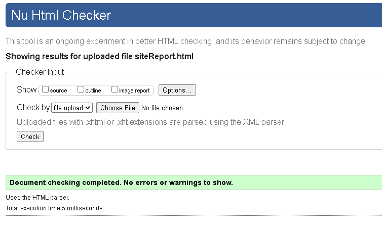
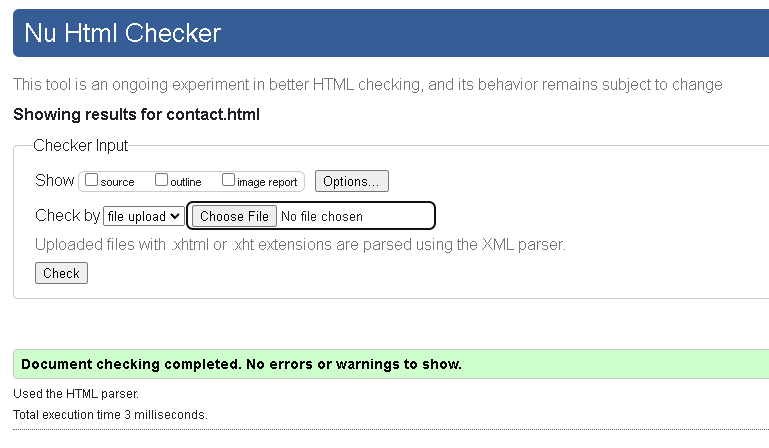
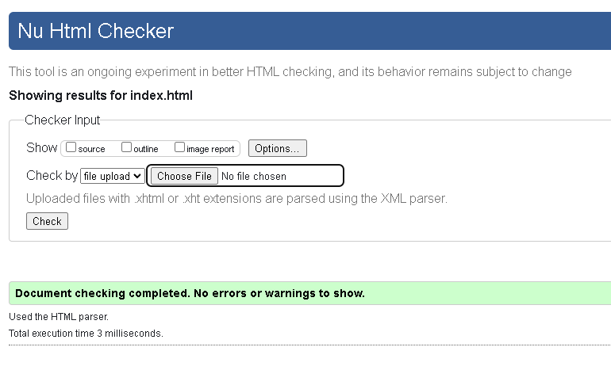
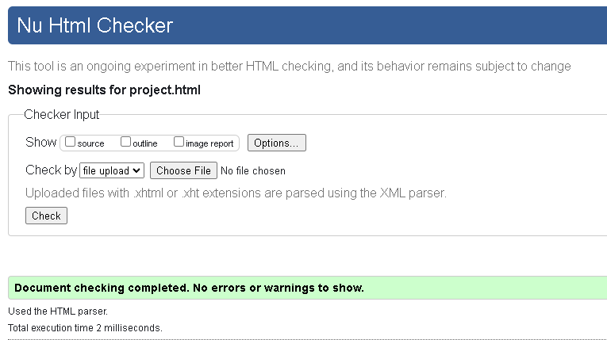
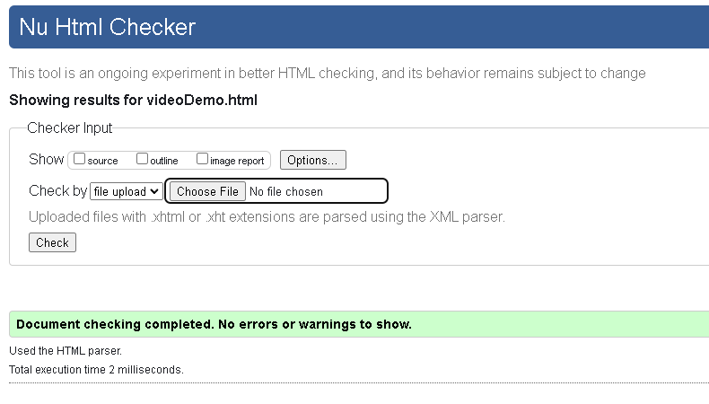
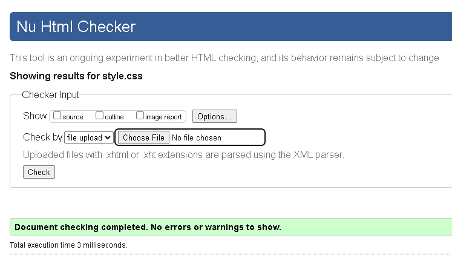

This is my
Site Report
Developing this portfolio website has been an enlightening experience in learning the basics of web development, coding, design, and debugging. Starting with HTML, I learned how to structure web pages semantically as well as asementically, which made the content more accessible and easier to style with CSS. The process involved creating five distinct pages, each serving a specific purpose, such as the home page, project showcase, contact form, video demonstration, and this site report.
One of the challenges I faced was consistently maintaining color and the theme of the project. Using css was quite a challenging task as there were too many things i still needed to explore for example css units such as em,px etc.
Another significant aspect was managing the project using Git and GitHub. This version control system allowed me to track changes and maintain a history of the project. It also made it easier to deploy and share the website.
Design Decisions
The design of the website was influenced by the principles of simplicity and clarity. I chose a clean, modern font (Poppins) which i have fetched from google font and a neutral color palette with shades of black for the background, white and purple for the content sections, and a contrasting yellow color for the header and hr tags. This ensured that the content was easy to read and visually appealing.
The navigation menu was designed to be straightforward, providing easy access to all the main sections of the site. The use of a grid layout on the project page allowed for a visually organized presentation of the projects, which can be expanded with actual work samples in the future.
The contact form, though basic, meets the requirements of the module by launching the user's email program. For future enhancements, I plan to implement a more sophisticated contact form using server-side processing.
Several websites served as inspiration for my design choices, including (https://bootstrapmade.com/demo/Personal/) and (https://bootstrapmade.com/bootstrap-portfolio-templates/), which showcase clean, professional portfolio designs.
Validation Reports
To ensure that my HTML and CSS met web standards, I validated my code using the W3C validation services. Below are the screenshots of the validation reports:
     Both the HTML and CSS passed validation with no errors, ensuring that the site adheres to best practices and is more likely to be compatible with different browsers and devices.
Video Demonstration
You can view a demonstration of the website by watching the video available at the following URL: [https://youtu.be/uYhoDjSu8hI?feature=shared].